相对运动理论
- 相对论应用要注意不要过度自信，特别是在强烈的趋势的情况下，有时候不一定会回到原位
- 运用的时候，也要考虑速度的问题。
- 如果是第二浪开始前，大幅回撤，然后出现快速的运动，直接突破前面的极点，那么可以认为是会回到原位。
但是如果回撤后，速度慢于前面到达极点的速度，那么说明第二浪很有力量，不会回撤原位，甚至永远不会结束
- 如果一个走势的开始的根基大于前一个走势的根基，比如开始速度很慢，那么也不一定会回到原位
- 如果是顺更大的市场出现了相对论，那么超过原位的可能性很大
- 如果一个走势一开始就大幅快速运动，那么不一定就是会回到原位，也可能是非常强大的走势。 要看后面的走势发展
相对幅度理论
相对时间理论
错误的相对论应用
错误的相对论应用
TOP
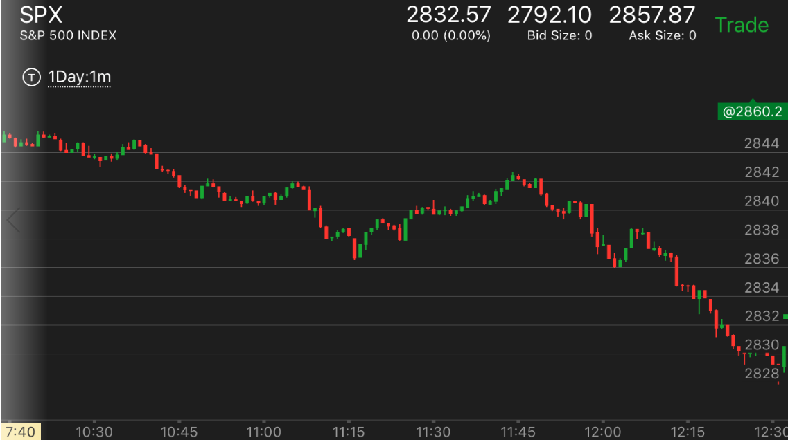
图示：11:45出现了把跌幅全部拉回的走势。如果应用上涨的相对论，一旦跌势结束，它应该反弹回来到原来的位置。
但是它在12：00跌倒原来的低点后，立刻反弹，没有跌破低点。因为处于跌势。大盘应该直接大跌。但是大盘却反弹了。分成两段下跌。
这样跌势更加猛烈，而不能应用相对论。而实际上应该应用跌势的相对论。11：10的下跌速度很快，从2842到2836，被拉回全部跌幅。
11：45开始的下跌，速度几乎是前面下跌的1/2.这样应该跌幅更大，而它在前面反弹的地方也反弹了。只会让它跌的更加厉害。
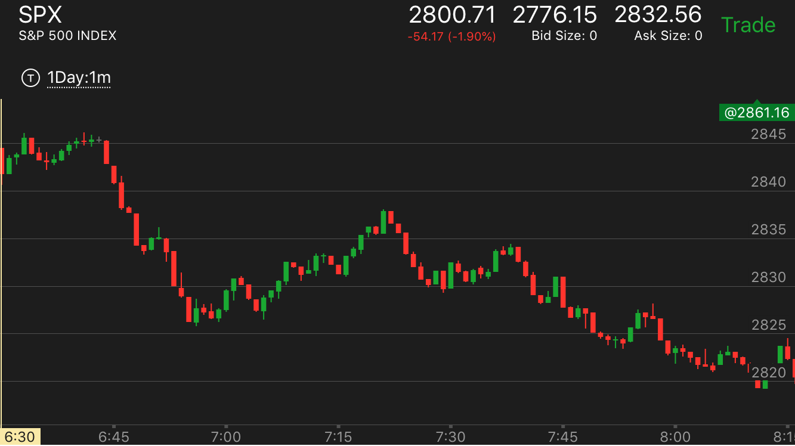
图示：开盘后第二分钟出现第一浪，然后回调，出现第二浪。第二浪在顶点走平。突然大跌。这个大跌很强。不能认为前面的第二浪和第一浪走平
就会认为这个走势会回到原位。其实这样看，应该是跌势强，涨势弱才对。因为第二浪没有创明显新高。只是回到原位，走平。这样是双重弱势。不但第二浪弱，还走平，
为反向走势提供弹药。
相对时间理论
TOP
开始运动快，然后走平很长时间，总的看运动很慢
一开始运动就很慢，后面加快
拉回全部涨幅后，再次缓慢上涨，超过前面涨幅。
拉回全部涨幅后，再次缓慢上涨，超过前面涨幅。
TOP
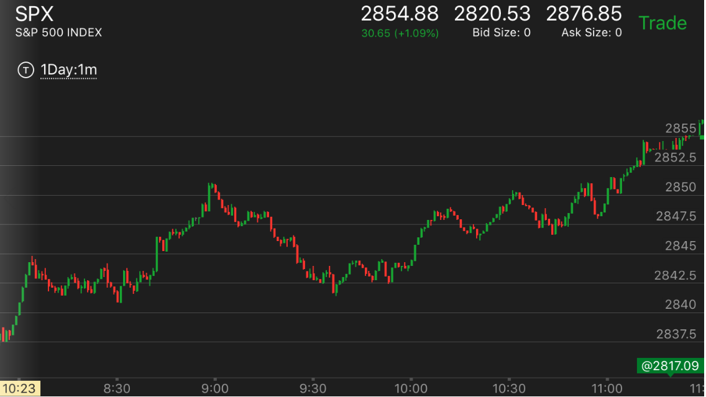
图示：8：40它冲高，速度比较快。9：30全部拉回涨幅。要注意它在9：30出现了一个冲高下跌的走势，虽然很小，
但是意味着下跌的结束。9：35它反弹，冲过前面的高点，然后回调。这时可以分析。前面的涨幅被全部拉回，又开始升势，
一方面，它下跌速度很快。一定会再次回去。另一方面，它拉回全部涨幅，开始上涨，只要速度很慢，就会超过前面的高点。9：50的上涨，出现了
上涨中不断拉回的走势，这样越来越高，最高突破2850.
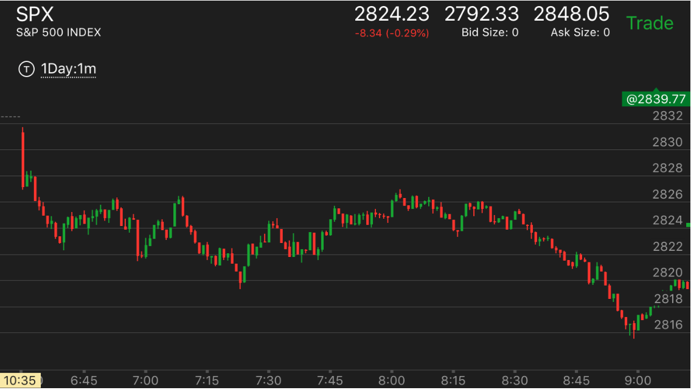
图示：开盘出现跌势，然后震荡。7：00出现了相对论走势。它下跌出现新低，然后很快拉回原来的高点。
再次下来。下来速度很快。并且出现了下跌后走平下跌的走势。然后冲高，表示反转了。冲高后，立刻拉回，为再次冲高准备。
可以想到，它一定会冲破原来的下跌高点的。它果然冲高到了原来的高点，然后开始下跌。因为仍然处于跌势。
所以升幅有限。如果是升势，会大涨。
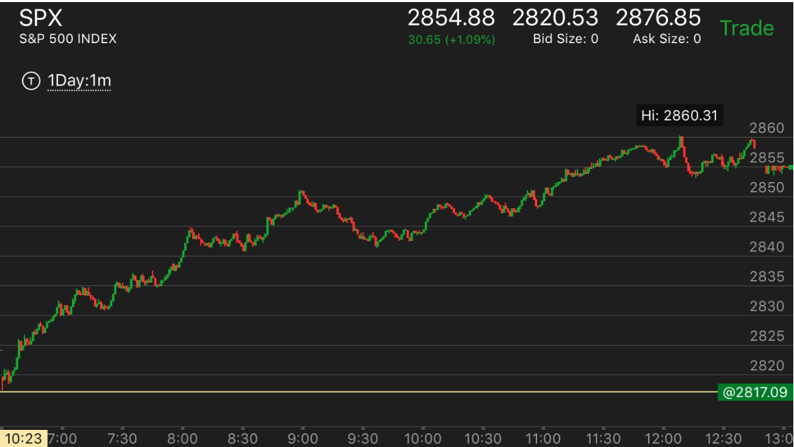
图示：开盘后除了一开始幅度比较大，后面一直缓慢上涨。说明一直处于升势。
注意8：40出现的大涨。很快拉回。9：30左右，出现了，走平后，下跌。完全拉回的小走势。运用相对论，
可以分析，它前面涨的太快，而且大盘处于升势。这次如果缓慢上涨，一定超过前面高点。如果快速上涨，
那么至少会回到原来的高点。
开始运动快，然后走平很长时间，总的看运动很慢
TOP
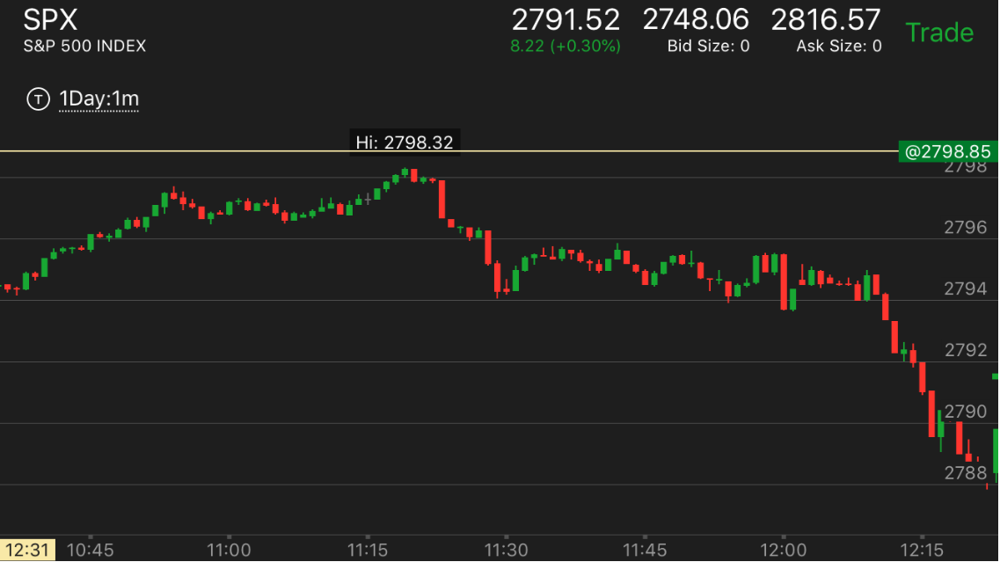
图示：11：15开始的下跌速度很快，而且分为两段。这样的走势应该不是主要走势。然而，它走平很久。几乎有45分钟。
这样平均来看，下跌的速度很慢。这样就成了一个主要走势。跌幅应该更大。另外11：30不是一个典型的底部走势。所以也不对。这样走平结束后，大跌。
这样的快速下跌是为了跨越。然后走平很久，为了积蓄力量。也是一个主要走势应该有的样子。
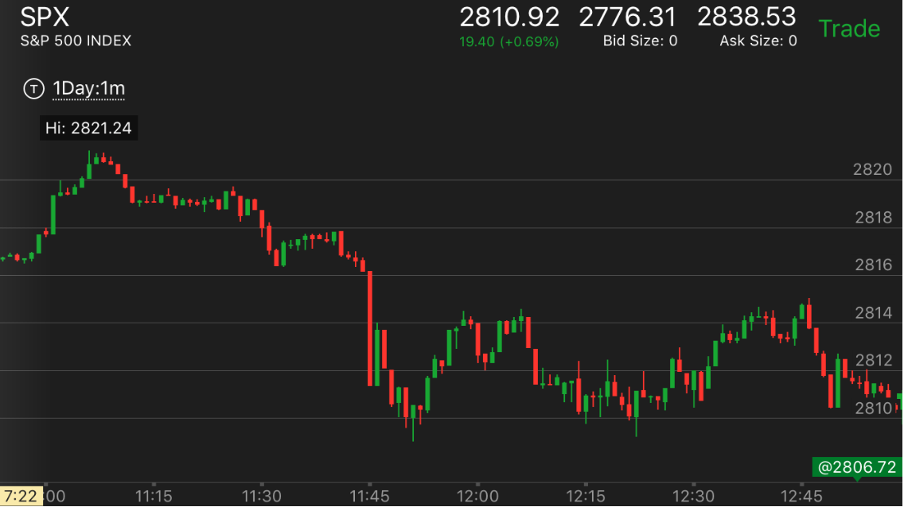
图示：11：05开始下跌，相比它上涨的速度，并不慢。然而它走平了很长时间，从11：10到11：25.这样平均来看，下跌速度很慢。
这样就是要大跌的预兆。加上前面的两段走势已经结束。11：45大跌后。其实只是第一段下跌。但是因为没有时间，或者前面跌的太厉害了。所以不继续下跌，但是也不会反弹。
最后收盘还收盘在低点。
相对幅度理论
TOP
- 这个走势在开盘的时候，或者一个走势根基不深的时候。可以判断走势的反转
- 如果明显在逆势，但是出现了这个形状，那么会有比较大的回调。
- 可以预测一个走势的幅度，如果一个走势的起步很弱，而前面的反弹起步很强，可以依照前面的反弹，预测它一定会超过这个点。
开盘应用相对强弱走势
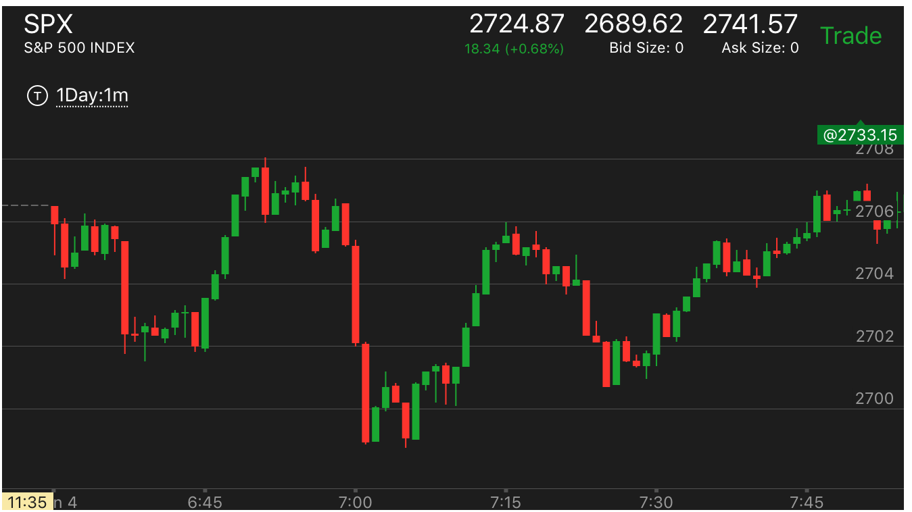
图示：
6：38和7：00是一个两段下跌走势。可以看到7：00的下跌更加猛烈，幅度更大。这样就到达底部了。要想到6：45这样小的跌势都反弹了，
7：00的下跌这么大，更会反弹的。这个走势的关键在于，6：45的反弹高于前面的走平点，这样表示反弹的力量很强。不然就可能变成了
力量积累里面的跌势。
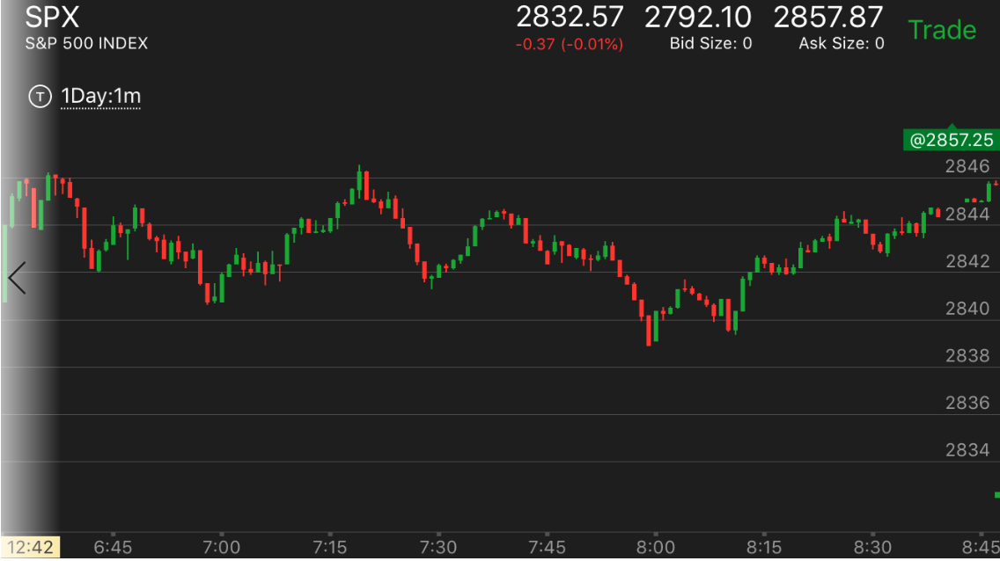
图示：开盘后，冲高，然后下跌，立刻回到原位，这个就是一个相对论。一旦下跌反转，至少回到这个点。它下跌很快出现了两段走势。
7：00开始反转上涨，很快回到了开盘高点。而从跌势考虑，它开盘冲高后，被全部拉回。这次再次冲高，肯定也会大跌。如果跌的速度比较慢，只会比原来更低。
7：15 开始的下跌，时间更长，跌的也更低。8：00才跌倒底部，出现了两段跌势。然后再次反转。如果升的时间更长。它应该比原来的高点更高。
这样震荡幅度不断扩大。每个走势都比原来的时间更长，而运动幅度也更大。
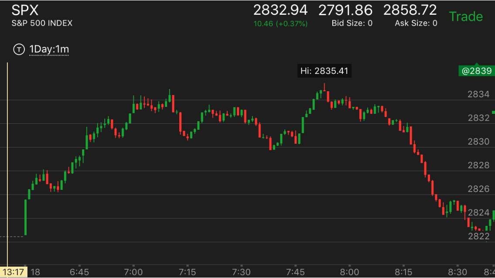
图示：开盘后，不断冲高，出现顶部。开始下跌，处于跌势。注意在没有到头的情况下，7：45它冲高，创新高，然后开始大跌。
一方面大盘处于跌势，一定要跌到底，另外一方面，大盘一定会涨回原来的位置，至少接近原来的位置。它最后用了一天的时间去涨回原来的位置。
相对强弱造成走势反转
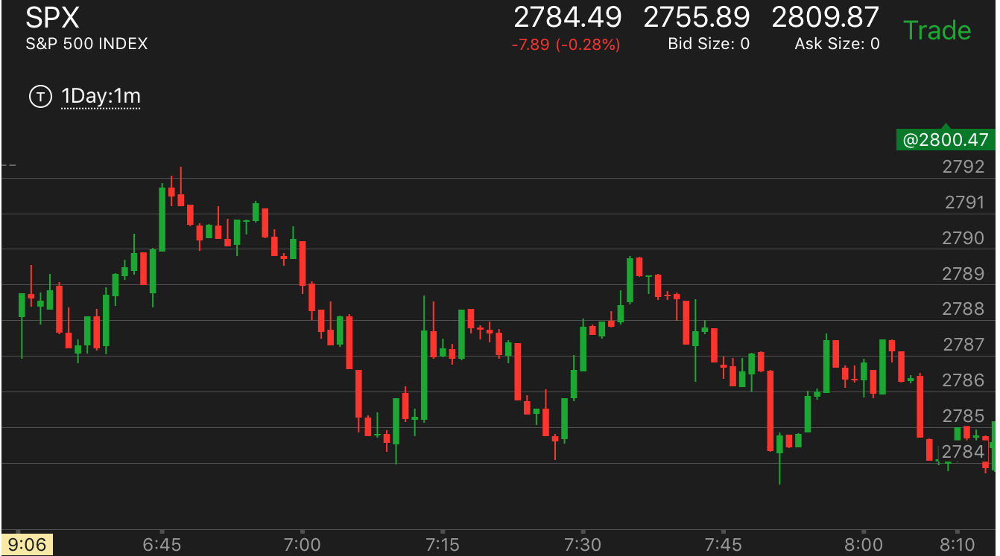
图示：
开盘处于跌势，7：15的下跌，造成7：30大的反弹。然后7：38开的大跌，跌幅更大，时间更短。考虑一下。前面那么小的跌都反弹那么大。
那么这个更会反弹了。另外这个也是两段走势的第二段。而且它的反弹开始很小，说明未来一定反弹的幅度一定超过前面反弹的幅度。
逆势中出现相对强弱，造成较大的回调
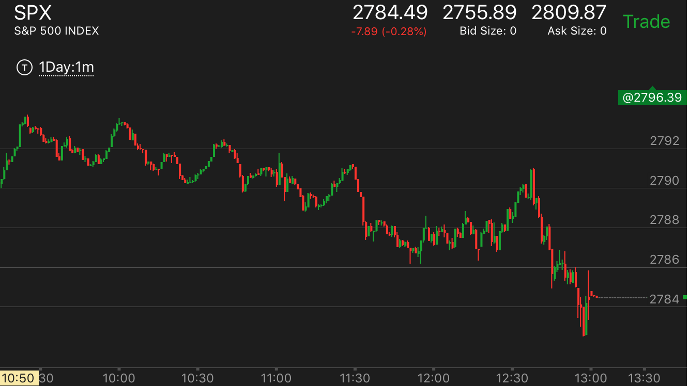
图示：
10：00开始的下跌，和前面的下跌比较，速度块，幅度大。说明未来会有比较大的的反弹。
第二段下跌中出现较大的反弹，这样预示着转折点
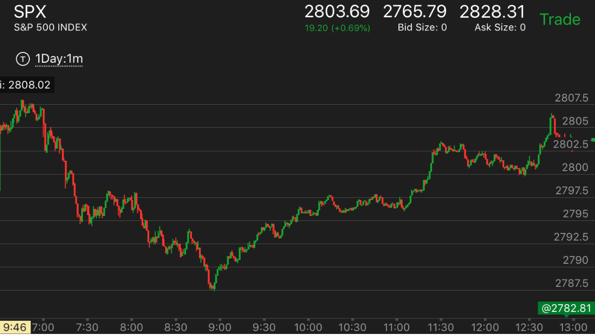
图示：注意8：30开始的反弹，它的反弹到了前面的高点一样。
比前面的反弹高点要高。大跌后。可以分析。前面的反弹这么强，这样的大跌，一定比前面的高点
更高。它的反弹开始也很软弱。更加意味着要大涨。考虑到这个是第二段跌势，意味着跌势的结束。
第一段升势开始了。
下跌的时候出现疑似双底，用相对论分析，不会成功
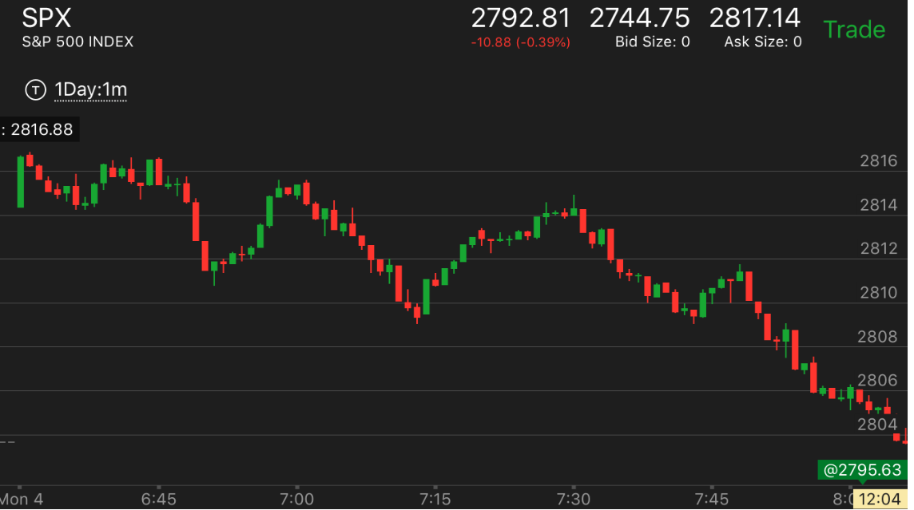
图示：注意7：45的双底。这个双底不会成功，
因为从7：00开始的下跌幅度很大。这次下跌，就分成两段。跌幅只会更大。
上涨的时候，一开始速度太快，拉回后，缓慢，可以预料会超过前面高点
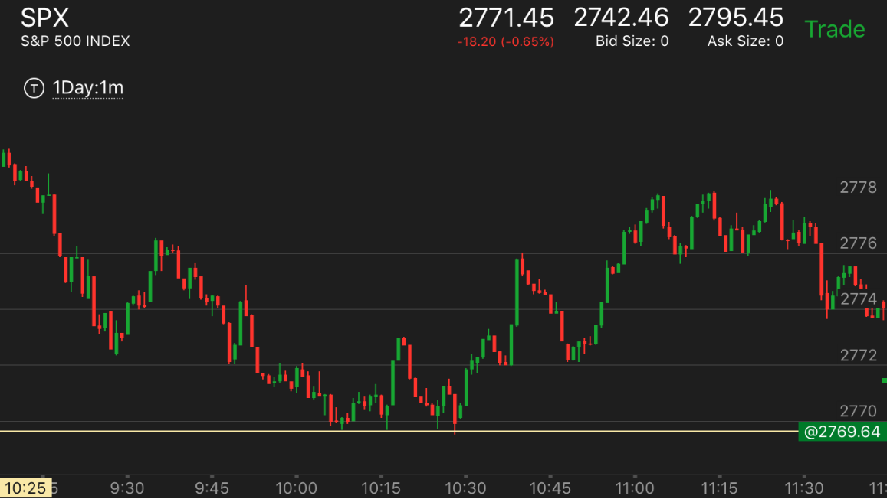
图示：10：15出现大涨，很快就被拉回。然后缓慢上涨。可以预料一定超过
前面的高点。10：40再次快速大涨，再次拉回。然后缓慢上涨。可以预料一定超过前面高点。
反向走势是一个两段上涨走势，结束后大跌
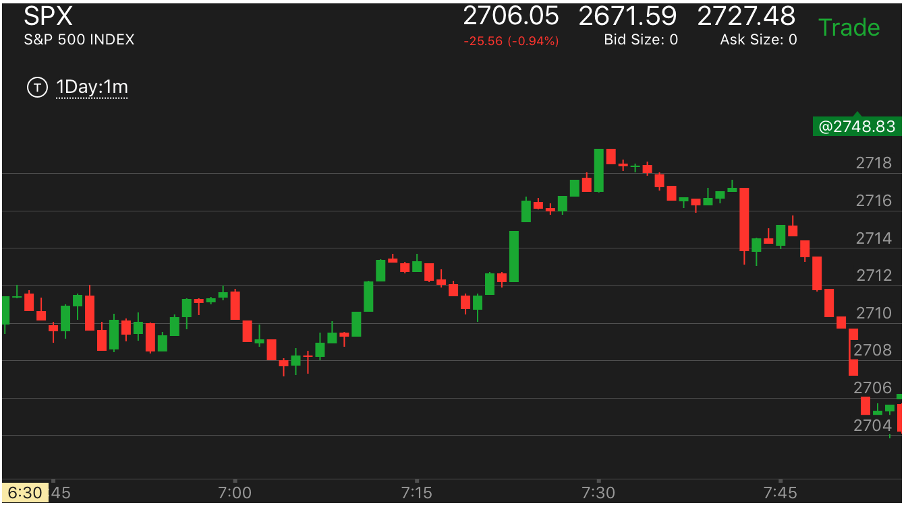
图示：
1. 开盘后，缓慢走低，其实处于跌势。注意看6：55的时候，它冲高，然后立刻被拉回全部升幅，还更低。
开始快速上涨。这个上涨是一个两段上涨走势。可以分析出来。前面的很小的升幅，都被这样拉的更低，
这样的大涨。更加被拉低。何况这个是个两段上涨走势。恰好为大跌做好准备。它一定至少比前面的低点更低。